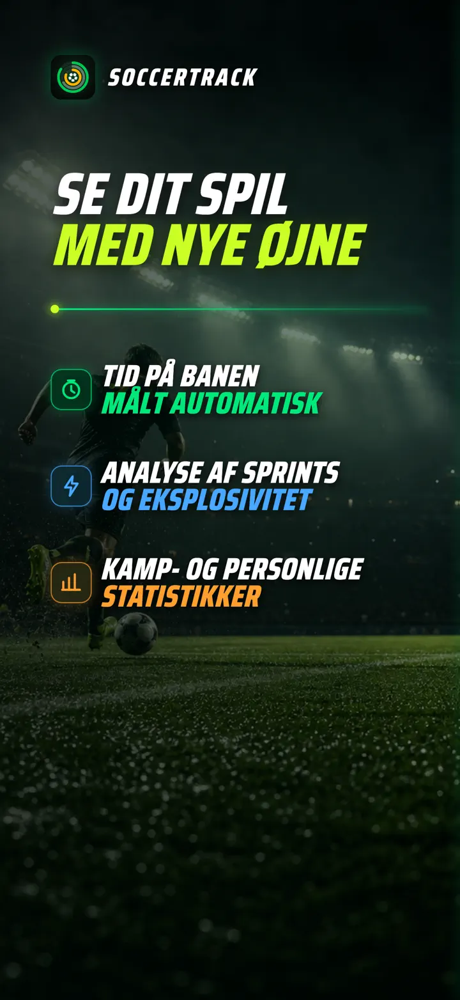
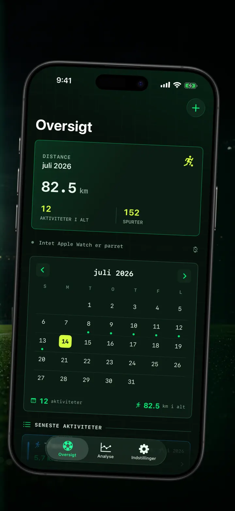
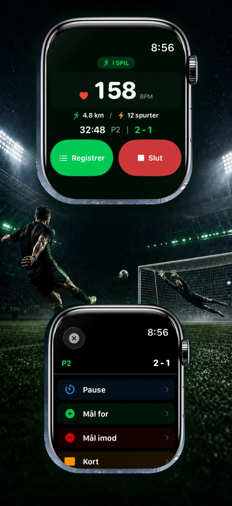
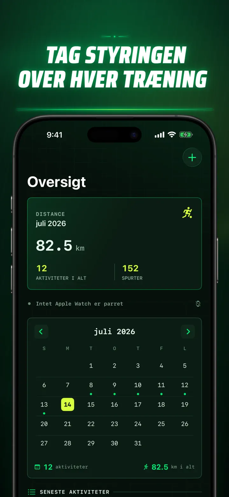
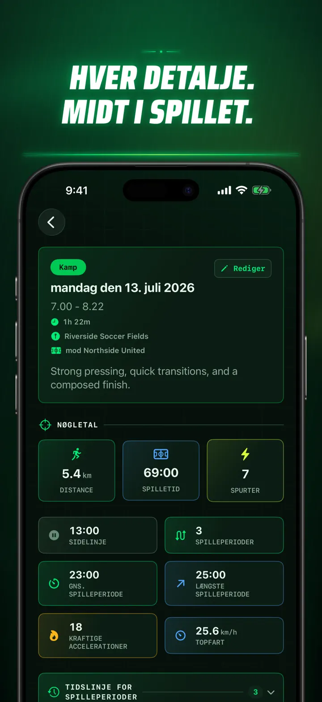
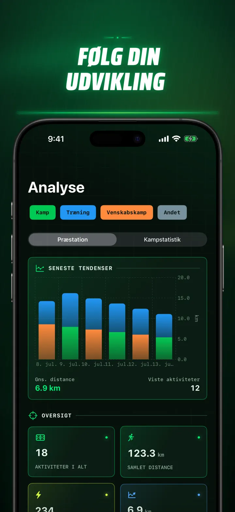
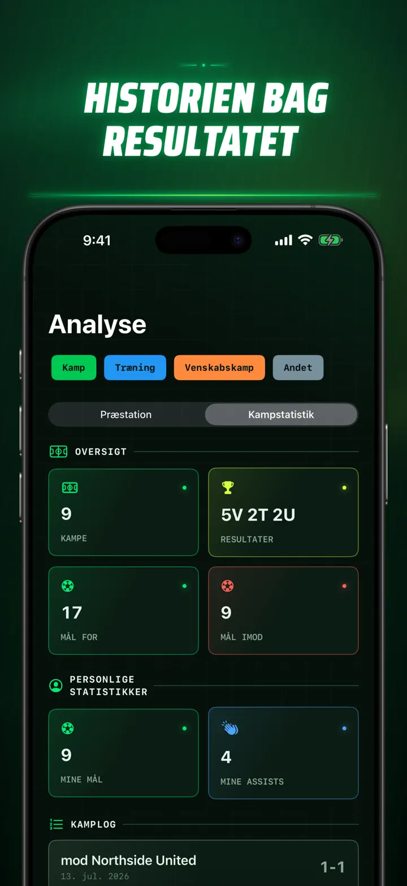
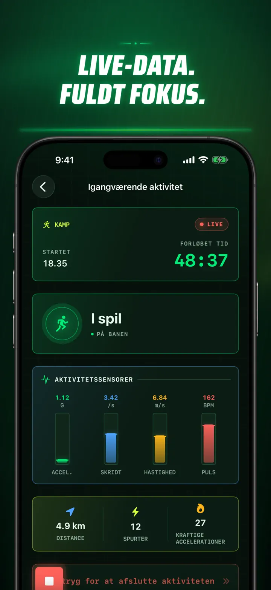
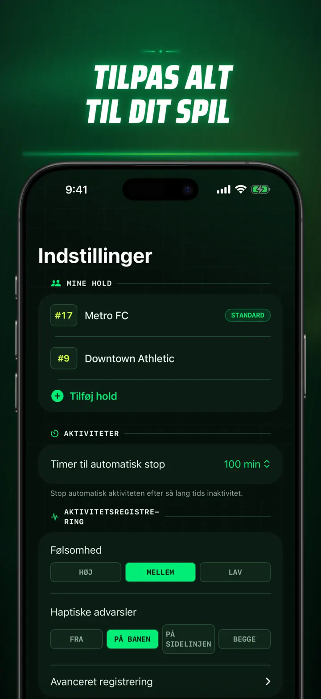
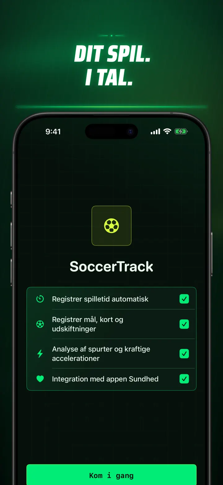

Soccer Time Track
Fodboldtid & kampanalyse
Start en session, og spil. Apple Watch skelner automatisk mellem tid på banen og bænken og registrerer live-data, sprint, hændelser og tendenser.
Hent i App Store
Om appen
Se din kamp med nye øjne.
Soccer Time Track gør Apple Watch til en kamptracker for spillere, der vil forstå mere end slutresultatet. Start fra håndleddet, fokusér på spillet, og se bagefter et detaljeret billede af din præstation på iPhone.
AUTOMATISK TID PÅ BANEN
Se, hvornår du virkelig var med i spillet. Bevægelses-, trænings- og lokalitetssignaler hjælper med at skelne mellem spil, lav aktivitet og tid på bænken. Du får:
- Tid på banen og bænken
- Spilperioder og en tydelig tidslinje
- En detaljeret oversigt over hele sessionens forløb
KAMPDAG FRA HÅNDLEDDET
Vælg Kamp, Træning, Venskabskamp eller Andet. Registrer undervejs:
- Mål for og imod
- Dine mål og assists
- Gule og røde kort
- Udskiftninger og periodeskift
DIN KAMP, MÅLT
Få mere end bare minutter med data som:
- Distance
- Gennemsnits- og topfart
- Sprint og højintense accelerationer
- Puls og aktive kalorier
- Kadence og acceleration
LIVE-DATA, FULDT FOKUS
En parret iPhone kan vise live-målinger, mens Apple Watch fortsætter træningen. Du holder fokus på kampen, mens dine data tager form i baggrunden.
SE DIN UDVIKLING
Saml kampe, træninger, venskabskampe og andre sessioner i én historik. Udforsk tendenser og personlige rekorder, sammenlign sessioner, og tilføj hold, trøjenummer, modstander, sted og noter for at bevare historien bag hvert resultat.
Skal du bruge dataene et andet sted? Eksportér sessioner, spilperioder og kamphændelser som CSV eller JSON.
SKABT TIL APPLE WATCH OG APPLE HEALTH
Med din tilladelse bruger Soccer Time Track trænings-, puls-, bevægelses- og lokalitetsdata til at skabe indsigt og gemme afsluttede fodboldtræninger i Apple Health. Automatisk registrering kræver Apple Watch. Du kan også tilføje en session manuelt på iPhone.
DINE DATA, DIN KAMP
Dine sessioner bliver på dine enheder og, når iCloud-synkronisering er slået til, i din private iCloud-database. Soccer Time Track kræver ingen konto, viser ingen reklamer og bruger ingen tredjepartsanalyse.
Stop med at gætte på, hvor meget du spillede. Se, hvad du fik ud af tiden.
Privatlivspolitik: https://masawata.net/SoccerTimeTrack/privacy-policy.html Servicevilkår: https://www.apple.com/legal/internet-services/itunes/dev/stdeula/
Skærmbilleder









Soccer Time Track
Start en session, og spil. Apple Watch skelner automatisk mellem tid på banen og bænken og registrerer live-data, sprint, hændelser og tendenser.
Hent i App Store